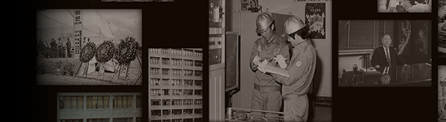
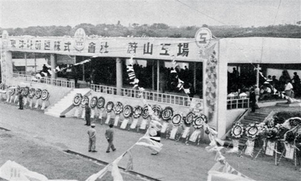

회사연혁
“끊임없는 도전과 성취의 역사”

2000년~현재
-
- 2021년
- ESG 경영위원회 출범
- (주)효성, 효성트랜스월드 흡수합병
-
- 2020년
- 효성캐피탈 매각
-
- 2019년
- 효성중공업, 수소충전소
연합군 ‘하이넷’ 합류
-
- 2018년
- 효성 ‘프리즈마’, 2018년도
IR52 장영실상 수상 - 중국 저장성 위안자쥔
성장 효성 방문
-
- 2017년
- 대한적십자사 최고명예대장 수상
- 공덕역 효성해링턴스퀘어 준공
-
- 2016년
- 효성그룹 창립 50주년
- POK사업단 자동차
품질경영시스템 인증
-
- 2013년
- 고분자 신소재 '폴리케톤' 개발
-
- 2012년
- 중공업PG, 카타르 전력망
공사 계약 체결 - 제방폭인증(IECEx),
유럽방폭인증 계약 체결
-
- 2011년
- 브라질 스판덱스 공장 준공
-
- 2010년
- 베트남 스틸코드 공장 준공
- 카타르 전력망 사업 계약 체결
- 한전에 50MVA STACOM 국내 최초 공급
-
- 2009년
- Hyosung Way 발표
- 스타리스(주)와 효성캐피탈 합병
-
- 2008년
- 충남 태안 태양광발전소 준공
- 진흥기업(주) 인수
-
- 2007년
- 더클래스효성 3년
연속 고객만족도 1위 - 삼랑진 태양광발전소 준공
-
- 2006년
- 브랜드 관리시스템 도입
- 3년 연속 '가장 존경받는 기업'
으로 선정
-
- 2005년
- 중국 가흥 나이론필름 공장 준공
- 구미 나일론 필름 공장 준공
-
- 2004년
- 효성드라이비트(주),
(주)효성이노테크로 사명 변경
-
- 2003년
- 나일론원사PU, 국내 최초로
에어백용 나일론 원사 개발
-
- 2001년
- ERP 도입
1990~1999
-
- 1999년
- 구미 스판덱스 공장 증설
-
- 1998년
- 5개 PG와 31개 PU로 조직 개편
-
- 1997년
- 효성에바라엔지니어링 설립
- 화섬부문 ISO 9001 인증 획득
- 정보통신부분 ISO 9001 인증 획득
-
- 1996년
- 동양나이론, 효성T&C로 사명변경
- 매출 1조원 돌파
-
- 1995년
- 대전 타일카페트 공장 준공
-
- 1994년
- 효성정보통신(주) 설립
-
- 1993년
- 폐수정화미생물제 'PREMO' 개발
- 초고압변압기, 차단기,
전동기 4개 부문 ISO 9001 인증
-
- 1992년
- 스리랑카 CFC 나이론공장 인수
-
- 1991년
- 효성생활산업 장학재단 설립
-
- 1990년
- 효성생활산업 장학재단 설립
1980~1989
-
- 1989년
- 창원 제4공장 (전장공장) 준공
- 효성EBARA 설립
-
- 1988년
- 수지응용가공연구소 설립
-
- 1987년
- 한국엔지니어링
플라스틱(주) 설립 - 원미섬유공업(주) 흡수 합병
-
- 1985년
- 효성NAS(주)(現 효성인포메이
션시스템㈜) 설립
-
- 1984년
- (주)토프론 흡수 합병
- 효성건설(주) 흡수 합병
-
- 1983년
- 전자연구소 설립
- 전동기 미국 수출 개시
-
- 1982년
- 인도에 타이어코드
제조기술 첫 수출 - 방글라데시 230kV
특수철탑 수출
-
- 1980년
- 효성BASF(주) 설립
- 구미컴퓨터 공장 준공

1970~1979
-
- 1978년
- 중공업 기술연구소 설립
- 최고품질관리시스템상 수여
-
- 1977년
- 창원 중공업 공장 준공
-
- 1975년
- 한영공업(주) 인수
-
- 1973년
- 동양폴리에스터(주) 설립
-
- 1971년
- 기술연구소 설립
-
- 1970년
- 한일나이론(주) 인수 합병
-
- 1969년
- 국내 최초 154kV
고압변압기 개발
-
- 1968년
- 울산공장 준공
-
- 1967년
- 울산 타이어코드 공장 완공
-
- 1966년
- 동양나이론 설립